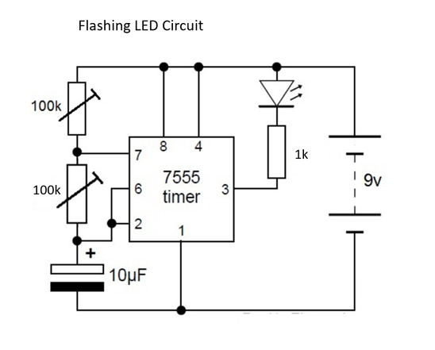
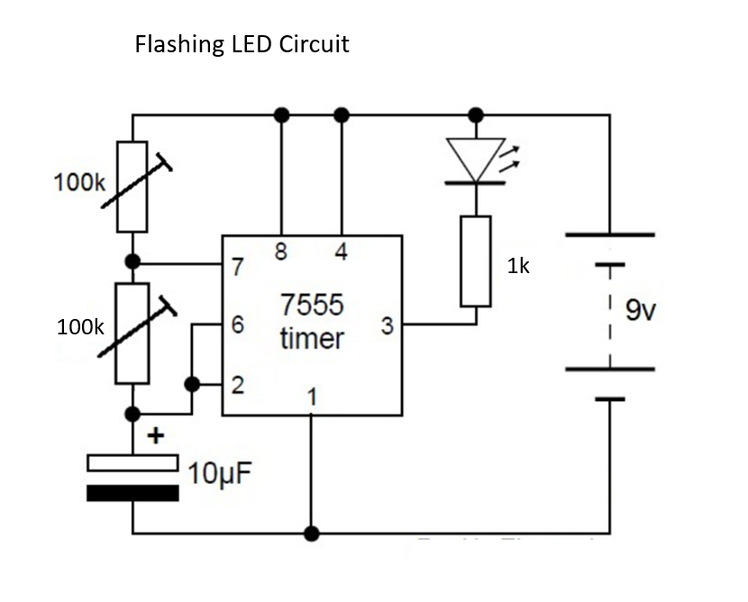

The fizzle loop synth came into being after mashing a couple of simple 555 projects together to make one.
At the heart of the fizzle loop is a Vactrol – a simple little part that is made from an LED and a photo resister such as a CdS.
Calling this a synth might be pushing it a little - it's more a sophisticated noise maker but it's still a lot of fun to use and play with.
The first 555 project controls a flashing LED and the second utilizes a photo resistor to change the pitch.
There are multiple ways to control the sound from the synth and I’m sure that you could easily add a whole bunch more if you wanted to.
So what does it sound like?
Well controlling the speed of the flashing LED changes the speed of the sound while changing the pot on the photo resistor changes the pitch.
The other controllers also work on changing the brightness and speed of the LED giving you some really cool sounds.
There is also an output jack so you can hook-up a amplifier and really get the synth pumping.
Although this utilizes two 555 timers, they are really separate projects married together.
Once you build one, you just build the other and connect them together via the vactrol.
I also gave each 555 their own poer source as I was getting some noise from using a common ground for both 555 timers.
If you have never done any projects with a 555 timer, then I would suggest you make a couple of these first to get yourself familiar.
This isn’t a hard project but you will need some experience in how circuits are put together and to be able to read a schematic.
Lastly, I won’t be going through a step by step guide on how to solder all this together.
I’m going to assume that you can understand the schematics and can figure it out for yourself.
I’ve taken some images of the important parts and added some explanations where warranted.


Parts
The Light Theremin Circuit
Flashing Light Circuit
Other Parts
Tools


The flashing light circuit is quite simple and works by changing the values on the pots. On the original schematic, there is only the 100K pot which is used to speed up or slow down the flashing LED.
Another 100K pot (so there are 2 pots in total) has been added to give more options in changing the speed and brightness of the LED.
It isn’t necessary but if you want more sound options, then it’s worth adding it.


The second part to the synth is a light Theremin circuit. I made a project recently using this circuit which can be found here.
This uses a photo cell which acts like a resistor, to change the frequency of the sound with light.
We will be attaching the 2 circuits together through the LED on the first circuit and the photo cell on the other using a Vactrol.


A Vactrol acts like a potentiometer - applying a voltage to the Vactrol's LED has the same effect as turning up the knob on the potentiometer.
It consists of two components incorporated into one package: a light-emitting diode (LED), and a photoresistor (a resistor whose resistance drops when it is exposed to light)
It’s important that the only light that the photo cell can detect is from the LED.
If outside light is able to reach the photo cell, then it will interfere with the performance and sound, that’s why you need to add something like heat shrink to protect them.


Steps:



I’ve added a few tips below when building the first half of the circuit – the flashing LED.
I added 2 100K pots as I found that this gives me more control over the frequency.
You should mix and match yourself to try and get the best sound from your synth.
Do this on the bread board and try and few different values to see if one works better than another.
Also, the original resistor for the LED was 3.3K. I brought this down to 1k to make the LED brighter.
I know that this is self-evident but make sure that the LED in the vactrol is correctly orientated when connecting to the circuit. It would be easy to incorrectly connect the polarities.
Make sure that once you have built the circuit, you test and make sure that it’s working.
You can do this by touching an LED’s legs to the resistor and one of the LED legs from the Vactrol.
If it doesn’t work check over the circuit and see what you missed.
I forgot to attach pin 8 to positive!
Steps:


Once you have the first section done, you then need to make the light Theremin circuit.
I did modify the circuit diagram slightly and it is up to you whether you want to include the capacitor and switch on the photo cell.
I’m sure that there are many more hacks that you could do to get some different sounds out of your synth so experiment by adding different values to the capacitors and photo cell.
If you would like a step by step walk through on this circuit, you can check out this ‘ible which I did a little while back.
Steps:


The case could be anything from a cigar box to what I usedwhich is an old electrical meter I found in a junk shop.
I will go through how I put mine together and how I modified the case
Steps:


You will need somewhere to add the speaker. If you find that there just isn’t enough room you could always just plug the synth into an external amplifier you use that instead. I went for both options.
Steps:


You will need to add 3 potentiometers to the front of the case.
Decide where the best place for each one.
I decided to add the 2 pots from the flashing LED to the bottom of the lid of the case and the pitch changing pot from the Theremin in the middle as my case already had a great knob for it.
Steps:


Now that you have made the circuit and hopefully all is working correctly, you now need to attach all of the wires.
Steps:


Steps: